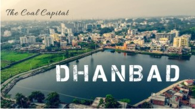

Dhanbad at a glance

Dhanbad is a city in Indian state of Jharkhand, and is famously known as Coal Capital of India. It is 96th fastest growing city in the world. It is the second most populous city in Jharkhand after Jamshedpur. The city is a great example of expansion, urbanisation and migration of people historically. It is one of the fastest growing cities and busiest commercial centres in India. Major Dhanbad attractions include Kalyaneshwari Temple, Bhatinda Falls, Shakti Mandir, Panchet Dam, Gopalpur, Bhuphor Mandir, Shiva Temple of Jhinjhipahari, Birsa Munda Park, Luby Circular Road, Koyla Bhawan, BCCL Headquarters at Koyala Nagar, Katras, Wasseypur, Topchanchi and Bekar Bandh.